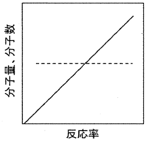
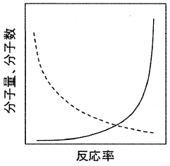
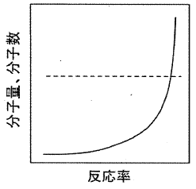
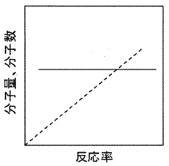
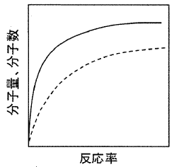

平成29年度 問17 高分子化学
2官能性のモノマーが次々に連結することで高分子が生成する反応を逐次重合という。例えば、ジカルボン酸とジオールからポリエステルが得られる重縮合は典型的な逐次重合である。次のグラフのうち、逐次重合により生成するポリマーの分子量、分子数と反応率の関係を表すものとして、最も適切なものはどれか。
ただし、実践が分子量、破線が分子数を表す。
①

②

③

④

⑤

正答
②
高分子の重合は、連鎖重合と逐次重合に大別されます。
連鎖重合は、重合開始剤から成長活性種を生成し、この活性種がモノマーに対して連鎖的に攻撃することで進行します。付加重合や縮合重合、開環重合が該当します。
逐次重合は、2官能性モノマーが互いに反応して結合を繰り返すことで進行します。重縮合や重付加が該当します。
連鎖重合では反応率が低い段階から高分子量の化合物が得られるのに対し、逐次重合では反応率が高くなってはじめて高分子量のポリマーが生成します。
活性部位が失活しづらく停止段階・連鎖移動がない連鎖重合はリビング重合と呼ばれます。